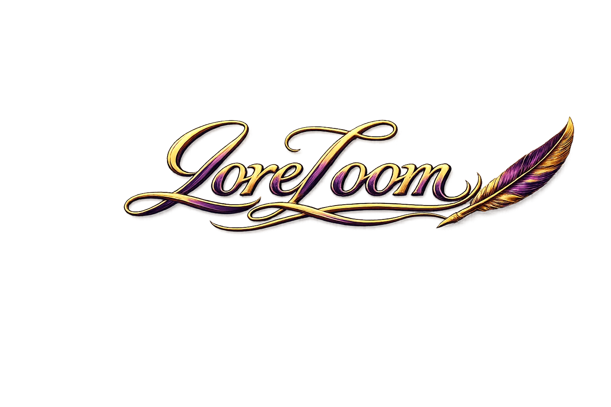

Tree-Style Story Structure
Arrange scenes, chapters, fragments, arcs, or experimental branches in a node-based structure that can match the project instead of a template.
LoreLoom / writing systems
LoreLoom helps writers organise stories, lore, codex entries, and creative fragments through a flexible node-based structure that adapts to the way they think.

Core concept
LoreLoom is built around the reality that creativity is rarely linear. Instead of forcing writers into rigid folders, timelines, or endless scrolling documents, it lets stories, notes, lore, and codex entries branch in a tree-style structure.
The goal is calm creative control: enough structure to maintain cohesion, enough freedom for different minds and different writing styles to feel at home.
Platform shape
Arrange scenes, chapters, fragments, arcs, or experimental branches in a node-based structure that can match the project instead of a template.
Keep outlines, draft sections, lore notes, and creative scraps close to the way each writer actually thinks, plans, and revises.
Build a worldbuilding codex with the same flexible tree philosophy, so characters, places, concepts, and history stay findable.
Designed especially for nonlinear creative workflows, context switching, fragments, and the practical need to return to a thought later.
The self-hosted version is intended to stay free, open source, private, and accessible for writers who want to keep their work close.
Future AI support is planned for codex expansion, continuity help, and surfacing relevant details from the writer’s own work.
Workflow
LoreLoom gives nonlinear work a place to land without flattening it into someone else’s method. The structure is there to support the creative thread.
Drop in scenes, snippets, ideas, lore notes, or stray thoughts before they vanish.
Organise material into a tree that can follow arcs, themes, timelines, or instinct.
Use codex structures to keep people, places, rules, and continuity easier to track.
Shape the work without losing ownership, privacy, or the human centre of the story.
Core beliefs
Beta testing
Writers of all kinds are invited to try the current workflow and share what fits, what rubs, and what kinds of creative structure LoreLoom should support next.
Back to Zentropy ventures